Національний спортивний комплекс «Олімпійський» — універсальна спортивна споруда у Києві, головна спортивна арена України та один з найбільших стадіонів Європи. На стадіоні проходив матч за Суперкубок УЄФА 1975 року, було проведено сім матчів футбольного турніру Літніх Олімпійських ігор 1980 та п'ять матчів чемпіонату Європи з футболу 2012, в тому числі й фінального, а також Фінал Ліги чемпіонів УЄФА 2018.Оновлена арена має статус стадіону категорії «еліт» і 70 050 розділених на 80 секторів місць, з яких під час матчів Чемпіонату Європи з футболу 2012 року УЄФА використовувалося 68 055 місць. Серед них — 3546 бізнес-місць, 150 (20 у VIP-секторі) місць для інвалідів, 1497 місця для представників ЗМІ, 366 — для коментаторів. Генеральним директором НСК «Олімпійський» є Груздєв Валентин Миколайович.
НСК «Олімпійський»- це унікальне поєднання 90-річної спортивної історії України, сучасного зовнішнього вигляду і новітніх технологій, які були застосовані відповідно до світових стандартів. Мультифункціональна спортивна арена готова приймати футбольні та легкоатлетичні змагання найвищого рівня, а також масові та корпоративні заходи. НСК «Олімпійський» - це набагато більше ніж стадіон. Це місце відпочинку для всієї родини, центр спорту, дозвілля і бізнесу в серці Києва.
Як дібратися?

 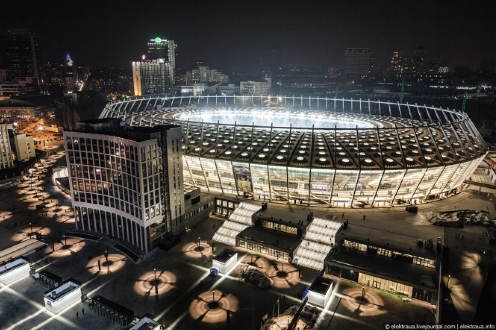
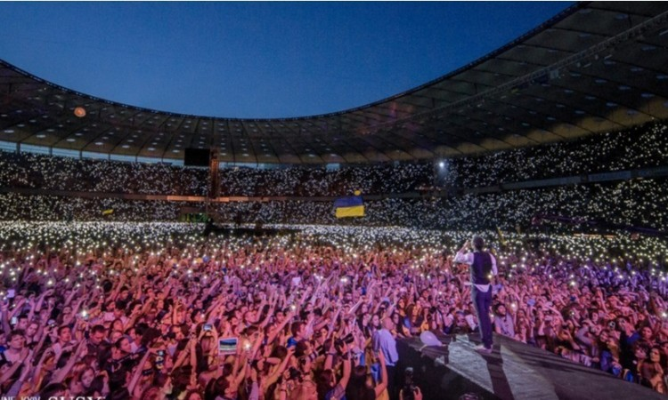
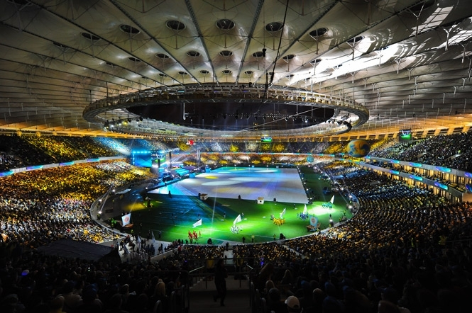
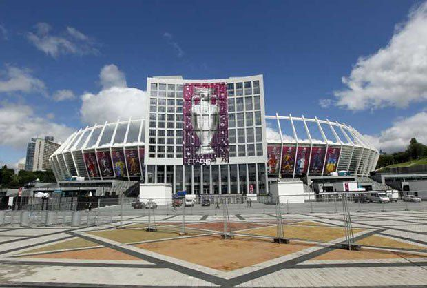
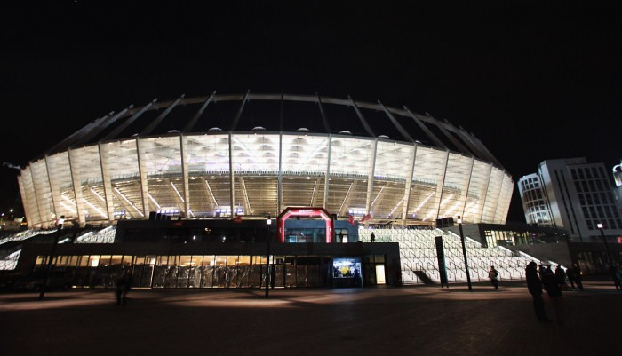
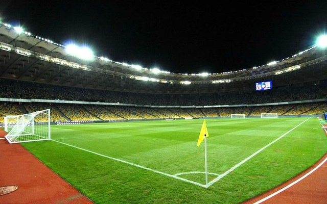
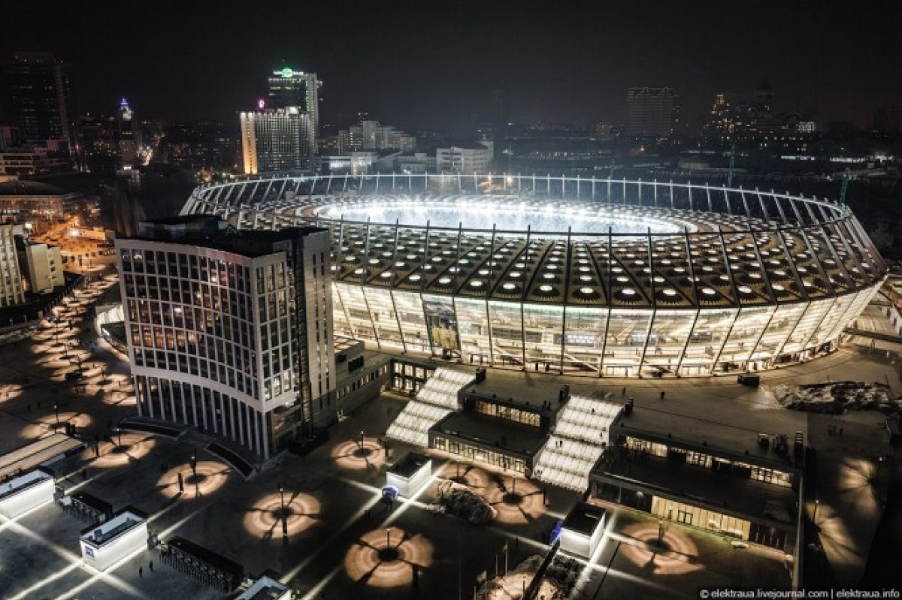
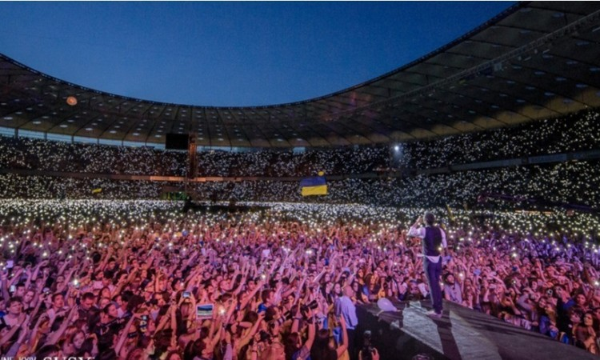
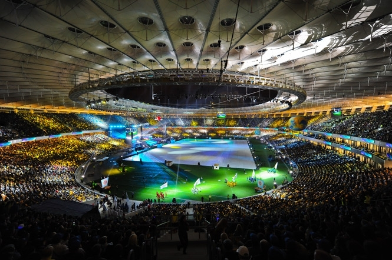
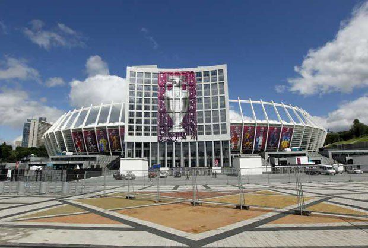
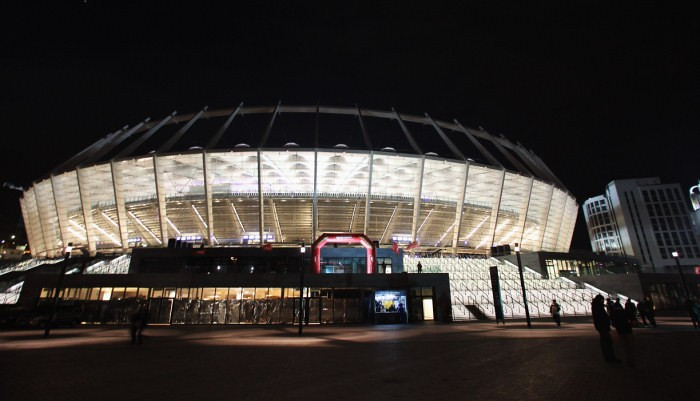
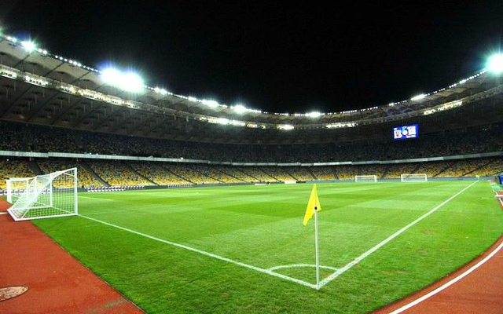